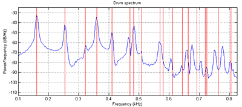

ECE 5760: Laboratory 2
Multiprocessor Drum Synthesis.
Introduction.
For this exercise, you will simulate the 2D wave equation on a square mesh in realtime to produce drum-like sounds.
This year we will add a nonlinear effect related to the instantaneous tension in the mesh.
We will also compare drum sizes that can be simulated in realtime using HPS and FPGA.
Relevant lectures from 2017 might be lectures 13 to 17.
But remember that lab 3 in 2017 is lab 2 today.
Procedure:
Read Study Notes on Numerical Solutions of the Wave Equation with the Finite Difference Method. The main result you will need to simulate is equation 2.18. A matlab program gives a sequential version of the algorithm and plots the Fourier modes of the drum. Another version is tuned to middle C (261 Hz). You can see in the figure below that the simulated sound spectrum (blue) matches the theoretical drum modes (red) up to about mode 8 or 9 (see Physical modeling with a 2D waveguide mesh for details) . The theoretical square drum mode frequencies follow the ratio sequence:
sqrt(m+n) where m,n=1,2,3,...
Where the first term (sqrt(2)) corresponds to the fundamental mode of the drum.
The first few modes are 1, sqrt(5)/sqrt(2), 2, sqrt(10)/sqrt(2), sqrt(13)/sqrt(2), sqrt(17)/sqrt(2).

Modifying the boundary conditions, damping, wave speed, drum size, and distrubution of input energy can modifiy the sound of the simulation from drum-like, to chime-like, to gong-like or bell-like. You can modify the program further to include frequency-dependent damping and other effects. This version simluates a long, thin bar struck at one end.
Adding tension modulation allows pitch bending observed in a real drum after a large amplitude input. The large amplitude means that the membrane is stretched more, and therefore the speed of propagation (and therefore pitch) is increased. This matlab code produces an exagerated pitch effect with initial high amplitude. See also PHYSICALLY-BASED SYNTHESIS OF NONLINEAR CIRCULAR MEMBRANES equation 10.
You will probably want to read
for ideas on parallelization.
The hardware audio interface is a Wolfson
WM8731 codec which is controlled by an I2C interface.
Cyclone5 handbook describing available hardware, but here is a summary.
Verilog Testing:
- Simulate one node with four zero-value boundary conditions.
Use synthesizable Verilog running in simulation in ModelSim
Result should be simple harmonic motion. Remember that rho<0.5. Start with rho=1/16.
Note that when rho is close to the limit of 0.5 that the solution has a very high natural frequency,
so that the sine wave is on the border of aliasing, and therefore looks like a square wave.
Assuming1:17 fixed point, start with initial conditions, un=un-1 and amplitude about 1/8 full scale.
Compare to matlab solution. rho=0.5, rho=0.0625
- Get the generate statement running and imulate the nonlinear PDE solver
for a 24x24 (or greater) grid using no more than 174 multipliers.
Compare to Matlab solution.
- Get 10x10 array running using the audio codec on the FPGA for demo in second lab.
You will want to refer to the Bus Master page, Audio output bus_master example.
Also refer to
the DSP page.
- Scale up parallel processor to 24x24 or greater. Required audio output
with nonlinear rho.
HPS Testing:
- A good place to start for audio output from HPS is to search for Using two ARM processors with IPC to display time while writing video and playing a tone on the DE1-SoC: University Computer page. The audio code example supports a finite difference drum scheme. The drum coded is a linear system with coefficients chosen so that cheap fixed-point shifts could be used to generate the 32-bit sound samples at 48Ksamples/sec. At -O3 optimization, I could just fit a 30x30 FDTD drum into the 20.8 microsecond systhesis time frame. With nonlinear rho, the maximum size was around 25x25 grid. MP3 generated by HPS on a 25x25 grid, with nonlinear rho. (wav)
- Modify the code for the nonlinear rho effect. This will require rewriting the solver to use fixed point multiplies.
- Get a finite difference scheme running using the audio codec on the FPGA.
Required audio output
with nonlinear rho.
- Scale up HPS solution until it is no longer realtime.
Student examples running on FPGA:
- 2008: Matt Meister and Cathy Chen wav file.
- 2008: Parker Evans and Jordan Crittenden wav1, wav2
- 2010: Skyler Schneider wav base drum
with n = 16 ,rho = 0.05, eta = 2e-4, alpha = 0.1, boundaryGain = 0.0, node hit = (8, 8), node probed = (8, 8)
- 2010: Peter Kung and Jsoon Kim, rho bit shifted = 6, 8, 10, 11, 14
- 2010: Kerran Flanigan, Tom Gowing, Jeff Yates, chickencan, glasshit, littlebongo, minibell
- 2011: Jinda Cui and Jiawei Yang, drum, bass drum, bowl
- 2011: Weiqing Li and Luke Ackerman, low, high
- 2011: João Diogo Falcão, growing grid, old MacDonald.
The growing grid starts at 7*34*4=952 nodes, (#columns*#lines*symmetry), and ends at 254*34*4=34544 nodes. This is with Rho=0.5 and Eta=0.000244.
- 2014 Saisrinivasan Mohankumar, Ackerley Tng, Ankur Thakkar, eta = 0.0002, rho = 0.5 and 0.25, boundary gain =0, Number of nodes = 89x257x2 ( rows x colums x symmetry) = 45746 nodes.
Lower, Higher
- Christine Soong, Mary had a little lamb
Assignment
Weekly check points
- Week 1:
--
Simulate a 10x10 (or greater) linear grid to produce a sound by exporting the wave file to matlab.
Use synthesizable Verilog running in simulation in ModelSim.
-- Show the number of cycles necessary to solve the audio sample.
-- Also demo the HPS producing a nonlinear drum sound through the FPGA audio codec.
-- Show the time that the HPS uses to solve the audio sample.
- Week 2:
--
Simulate the nonlinear PDE solver for a 24x24 (or greater) grid using no more than 174 multipliers.
Use synthesizable Verilog running in simulation in ModelSim.
-- Use the simulation waveform
to produce a sound in matlab.
-- Demo at least a 10x10 nonlinear solver array running using the audio codec on the FPGA
at real-time solution rate.
- Week 3: demo full FPGA system below and compare to HPS.
Full system
- Build a realtime drum solver which produces sound from the audio codec interface.
Minimum FPGA grid size for full credit should
be bigger than 24x24, the size that can be solved by the HPS in realtime.
The grid should have no more than 4:1 aspect ratio.
Grid expansion via symmetry does not count for size.
- The solver on the FPGA should solve the 2d wave equation to produce selectable effects.
A minimum of three buttons on the DE1-SoC should produce different timbers.
Timber can be set by boundary condition, eta, rho, tension modulation, or number of nodes.
At least one timber must include audible nonlinear tension modulation effects.
- There should be exactly one computational update of all the drum nodes for each audio sample.
Last year the highest number of nodes was around 80,000 on DE1-SoC.
Each sample that you calculate must be output to the audio codec.
Each node simulated will require around 10 additions/multiplications. You may be able to use clever shifting schemes to avoid multiplys. Thus the computation rate will be about
10*(number of wave equation nodes)*(audio sample frequency) .
For a minimal 24x24 grid you will need ~276x106
operations/sec. Clearly some parallel processing will be necessary as you go to higher numbers of nodes.
- You can use fine-grained parallelism or course-grained multiprocessors on the FPGA side.
- Plot grid size versus compute time for at least 3 different drum sizes for both FPGA and HPS solvers.
During the demo, prove to the TA that the computation finishes in less than 20.8 microseconds for the drum you demo.
At least one FPGA grid size should
be bigger than the size that can be solved by the HPS in realtime. - Record the audio output back into matlab to show that your simulation matches drum modes (under the correct boundary conditions, etc).
Be prepared to demo your design to your TA in lab.
Your written lab report should include the sections mentioned in the policy page, and :
- Mathematical considerations (what you actually implemented)
- The table of grid size versus compute time for both the FPGA solver and the HPS solver.
Do you see any cache-size effects on HPS? What is the effect of -O0 vs -O3?
Are there any scaling surprizes in the FPGA?
- Your parallelization scheme
- A plot of the power spectrum of your drum sounds
for each different timber
- A heavily commented listing of your Verilog design (if you write a bus-master) and GCC code (if you use HPS).
Copyright Cornell University January 9, 2019
{kind=link}
{kind=link}
{kind=link}
{kind=link}
{kind=link}
{kind=link}